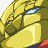

Hisoutensoku... It seems you escaped my control by letting the humans' wishes suffuse you. I can somewhat understand their mentality. And you must have had a reason for it too.
Hisoutensoku... It seems you escaped my control by letting the humans' wishes suffuse you. I can somewhat understand their mentality. And you must have had a reason for it too. But if you're going to stand in my way...
But if you're going to stand in my way...
... ...! You say you'll stop me, Hisoutensoku? That no matter what happens, I'm still a parent to you? ...
I will not abandon my dream. I have no other path to take, no other reason to live. If you feel any sympathy at all for me, then fall! Huh? This is that thing from earlier!
Huh? This is that thing from earlier! What the hell is this thing? Some kind of crazy new youkai?
What the hell is this thing? Some kind of crazy new youkai? The silent type, huh? You've sure got guts playing "unidentified youkai" with ME.
The silent type, huh? You've sure got guts playing "unidentified youkai" with ME. I'm thinking this greenhorn here needs some hands-on guidance from a veteran!
I'm thinking this greenhorn here needs some hands-on guidance from a veteran! You're asking how I knew? Reading the atmosphere is my specialty, after all.
You're asking how I knew? Reading the atmosphere is my specialty, after all. Foolish puppet, you think you can stand against ME?
Foolish puppet, you think you can stand against ME? You look tough so you won't break so easily!
You look tough so you won't break so easily! Wow, what's this?
Wow, what's this? A big doll? Seems like it's made of iron.
A big doll? Seems like it's made of iron. Do its arms and legs come off? Let's find out!
Do its arms and legs come off? Let's find out! What... When did this steel titan get here?!
What... When did this steel titan get here?! It's so coo—I mean, it has a certain dignity that could be considered attractive. Still, I can't allow you wander around as you please, my good name is at stake.
It's so coo—I mean, it has a certain dignity that could be considered attractive. Still, I can't allow you wander around as you please, my good name is at stake. To elude my eye, you must be something unusual indeed.
To elude my eye, you must be something unusual indeed. I don't know your circumstances, but there is nothing admirable about hiding things.
I don't know your circumstances, but there is nothing admirable about hiding things. Both in body, and attitude! Accept my danmaku judgement and repent!
Both in body, and attitude! Accept my danmaku judgement and repent! I'm surprised. They even have a mechanical doll with them?
I'm surprised. They even have a mechanical doll with them? Those darned surface dwellers, did they bring this guy too?
Those darned surface dwellers, did they bring this guy too? It's not fair. Why does the surface get all this awesome stuff?
It's not fair. Why does the surface get all this awesome stuff? I bet it's real popular with the kids!
I bet it's real popular with the kids! But as long as you're standing here, you are deserving of a dialogue with me.
But as long as you're standing here, you are deserving of a dialogue with me. By all means, tell me what makes you you.
By all means, tell me what makes you you. It's a big doll! And it's moving...?
It's a big doll! And it's moving...? We used to have that Flying Granary, so it's not a HUGE surprise, but...
We used to have that Flying Granary, so it's not a HUGE surprise, but... Either way, I can tell it's rare. Time for a little investigating.
Either way, I can tell it's rare. Time for a little investigating. A mechanical doll? No, you do seem to have a mind.
A mechanical doll? No, you do seem to have a mind. Is this... a giant catfish? And an unfamiliar location.
Is this... a giant catfish? And an unfamiliar location. I can't say I understand, but this is certainly your trauma.
I can't say I understand, but this is certainly your trauma. But it's no larger than some of our colossal monsters.
But it's no larger than some of our colossal monsters.